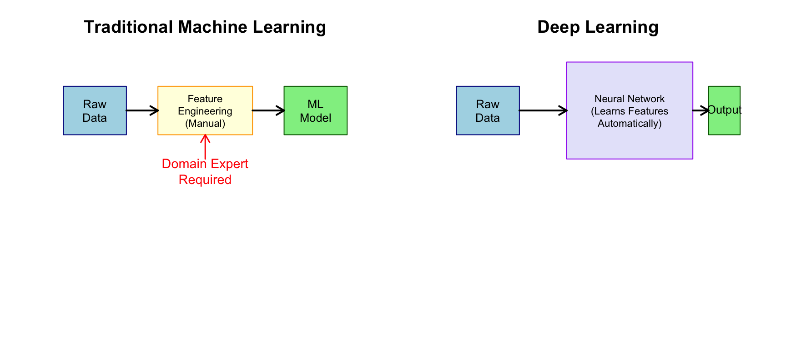
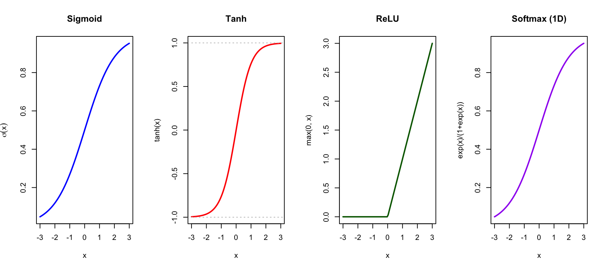
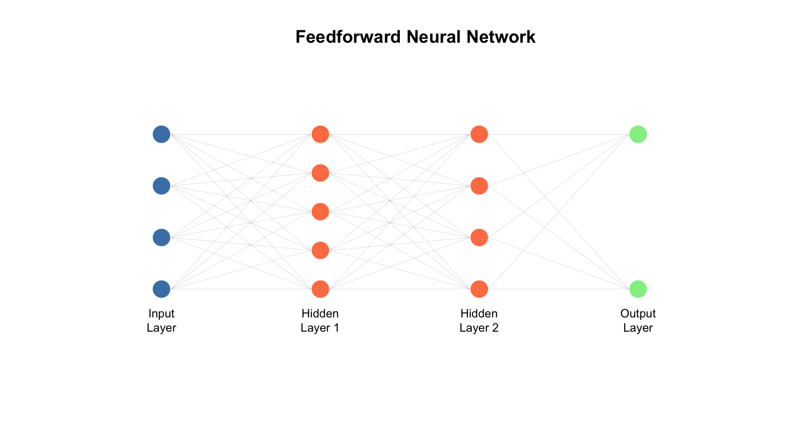

40 Introduction to Deep Learning
40.1 What is Deep Learning?
Deep learning is a subset of machine learning that uses artificial neural networks with multiple layers (hence “deep”) to learn representations of data. While the statistical learning methods covered in previous chapters work well with carefully engineered features, deep learning methods can automatically discover the features needed for classification or regression.
Deep learning has achieved remarkable success in areas that were previously difficult for computers. Image recognition and computer vision systems now match or exceed human performance on many tasks. Speech recognition and natural language processing have reached the point where we can have conversations with AI assistants. Protein structure prediction, once considered a 50-year-old unsolved problem, was essentially solved by AlphaFold. Game-playing systems like AlphaGo have defeated world champions at games once thought too complex for computers. Drug discovery and molecular property prediction are increasingly augmented by deep learning methods. And medical image analysis systems can detect diseases from scans with expert-level accuracy.
This chapter provides a conceptual overview of deep learning—how it differs from traditional statistical learning, the major architectures, and when it’s appropriate to use.
40.2 How Deep Learning Differs from Statistical Learning
Feature Engineering vs. Feature Learning
Traditional statistical learning requires careful feature engineering—domain experts must decide which variables to measure and how to transform them. For example, to classify cell types from microscopy images using traditional methods, you would first extract features like cell area and perimeter, nuclear-to-cytoplasmic ratio, texture measures, and intensity histograms. Only after this feature extraction would you apply a classifier like random forests or SVM.
Deep learning, by contrast, performs automatic feature learning. Given raw data (pixels, sequences, etc.), the network learns to extract relevant features at multiple levels of abstraction. You feed in the raw image, and the network discovers on its own which features are useful for distinguishing cell types.
Model Complexity and Data Requirements
Statistical learning methods typically have interpretable structures and modest data requirements:
| Aspect | Statistical Learning | Deep Learning |
|---|---|---|
| Model complexity | Low to moderate | Very high (millions of parameters) |
| Data required | Hundreds to thousands | Thousands to millions |
| Features | Manually engineered | Automatically learned |
| Interpretability | Often interpretable | Usually black-box |
| Training time | Minutes to hours | Hours to weeks |
| Hardware | CPU sufficient | GPU often required |
The Universal Approximation Theorem
Neural networks can, in theory, approximate any continuous function to arbitrary precision. This universal approximation theorem explains their flexibility—but doesn’t guarantee they’ll find a good solution in practice or generalize well to new data.
40.3 Neural Network Fundamentals
The Artificial Neuron
The basic building block is an artificial neuron (or unit), inspired loosely by biological neurons:
\[z = \sigma\left(\sum_{i=1}^{p} w_i x_i + b\right) = \sigma(w^T x + b)\]
In this expression, \(x_i\) are the inputs from the previous layer (or the raw features for the first layer). The \(w_i\) are weights—the learned parameters that the network adjusts during training to make better predictions. The term \(b\) is a bias, allowing the neuron to shift its activation threshold. Finally, \(\sigma\) is an activation function that introduces non-linearity, enabling networks to learn complex patterns that couldn’t be captured by linear combinations alone.

Activation Functions
The activation function introduces non-linearity, allowing networks to learn complex patterns:
Code
par(mfrow = c(1, 4))
x <- seq(-3, 3, length.out = 100)
# Sigmoid
plot(x, 1/(1 + exp(-x)), type = "l", lwd = 2, col = "blue",
main = "Sigmoid", xlab = "x", ylab = expression(sigma(x)))
abline(h = c(0, 1), lty = 3, col = "gray")
# Tanh
plot(x, tanh(x), type = "l", lwd = 2, col = "red",
main = "Tanh", xlab = "x", ylab = "tanh(x)")
abline(h = c(-1, 1), lty = 3, col = "gray")
# ReLU
plot(x, pmax(0, x), type = "l", lwd = 2, col = "darkgreen",
main = "ReLU", xlab = "x", ylab = "max(0, x)")
# Softmax (conceptual - for single value)
plot(x, exp(x)/(1 + exp(x)), type = "l", lwd = 2, col = "purple",
main = "Softmax (1D)", xlab = "x", ylab = "exp(x)/(1+exp(x))")

ReLU (Rectified Linear Unit) is most commonly used in hidden layers: \[\text{ReLU}(x) = \max(0, x)\]
Sigmoid and softmax are used for output layers in classification problems.
Layers and Depth
A neural network consists of three types of layers. The input layer receives the raw features—pixels of an image, nucleotides of a DNA sequence, or numerical measurements. Hidden layers transform these representations through successive applications of weighted sums and activation functions, with each layer building on the previous layer’s output. Finally, the output layer produces predictions—class probabilities for classification or numerical values for regression.
The “depth” of a network refers to the number of hidden layers. Networks with many hidden layers can learn hierarchical representations—simple features in early layers combine into more complex features in later layers. For an image, early layers might detect edges, middle layers might combine edges into shapes, and later layers might recognize whole objects.

Training Neural Networks
Neural networks are trained by backpropagation, an algorithm that efficiently computes how each weight contributes to the prediction error.
Training proceeds in cycles. First, the forward pass computes predictions by passing inputs through the network layer by layer. Then we compute the loss—a measure of how different the predictions are from the true values. The backward pass then propagates this error backward through the network, computing gradients that indicate how each weight should change to reduce the error. Finally, we update the weights, adjusting each one in the direction that reduces the loss.
This process repeats for many epochs (complete passes through the training data). The weight updates typically use stochastic gradient descent or more sophisticated variants like Adam or RMSprop that adapt learning rates during training.
40.4 Major Types of Deep Learning Architectures
Feedforward Neural Networks (Multilayer Perceptrons)
The simplest architecture, where information flows in one direction from input to output, is the feedforward neural network (also called a multilayer perceptron). These networks are appropriate for tabular data with numerical features, simple classification and regression problems, and situations where the number of features is fixed. They serve as the foundation for understanding more complex architectures.
Convolutional Neural Networks (CNNs)
CNNs are designed for grid-like data, especially images. They use convolutional layers that apply learnable filters across the input, capturing local patterns.
CNNs have several key properties that make them effective for images. Local connectivity means each unit connects only to a small region of the input, focusing on local patterns rather than the entire image at once. Parameter sharing means the same filter is applied across the entire image, so a pattern detector learned in one location works everywhere. This leads to translation invariance—the network can recognize patterns regardless of where they appear in the image.
CNNs learn hierarchical features automatically. Early layers typically learn to detect edges, textures, and colors. Middle layers combine these into parts, shapes, and patterns. Later layers recognize whole objects and abstract concepts. This hierarchy emerges naturally from training, without being explicitly programmed.
In biology, CNNs have transformed medical image analysis, from detecting tumors in radiology scans to classifying cell types in microscopy images. They are also used for analyzing protein structure visualizations and other imaging modalities.
Recurrent Neural Networks (RNNs) and LSTMs
RNNs are designed for sequential data where order matters. They maintain a “memory” (hidden state) that captures information from previous time steps.
Long Short-Term Memory (LSTM) networks are an improved RNN architecture that can capture long-range dependencies without suffering from vanishing gradients—a problem where gradients become too small to propagate through many time steps.
RNNs and LSTMs are applied to time series analysis such as gene expression changes over time, sequence modeling for DNA and protein sequences, and natural language processing tasks where word order matters.
Transformers and Attention Mechanisms
Transformers have revolutionized deep learning, particularly in natural language processing. Instead of processing sequences step-by-step like RNNs, they use attention mechanisms to relate all positions simultaneously.
The key innovation is self-attention, which allows the model to weigh the importance of different parts of the input when producing each output. Unlike RNNs, which must process sequences one step at a time, transformers can consider all positions in parallel, making them faster to train and better at capturing long-range relationships.
Transformers power the large language models like GPT and BERT that have transformed natural language processing. In biology, AlphaFold uses attention mechanisms for protein structure prediction, and transformers are increasingly applied to genomic sequence analysis.
Autoencoders
Autoencoders learn compressed representations by training to reconstruct their input through a bottleneck layer. The encoder compresses the input to a lower-dimensional representation, and the decoder attempts to reconstruct the original input from this compressed representation. By forcing information through a bottleneck, the network must learn the most important features of the data.
Autoencoders are used for dimensionality reduction (as an alternative to PCA), denoising data by learning to reconstruct clean inputs from corrupted ones, anomaly detection by identifying inputs that are difficult to reconstruct, and generating new samples through variational autoencoders that learn probability distributions in the compressed space.
Discriminative vs. Generative Models
Before introducing GANs, it’s helpful to understand a fundamental distinction in AI models. Most machine learning methods covered in this book are discriminative models—they learn to distinguish between classes by finding decision boundaries in the feature space. Given an input, they output a class label or prediction.
Generative models, by contrast, learn the underlying probability distribution of the data itself. Rather than just distinguishing cats from dogs, a generative model learns “what does a cat look like?” This allows them to generate entirely new samples that resemble the training data. Figure 40.5 illustrates this distinction.

Generative Adversarial Networks (GANs)
GANs consist of two networks trained in competition. The generator tries to create realistic fake data, while the discriminator tries to distinguish real examples from fake ones. Through this adversarial process—each network trying to beat the other—the generator learns to produce increasingly realistic samples.
GANs are used for image synthesis, creating photorealistic images of faces, scenes, or objects that don’t exist. In biology, they enable data augmentation by generating synthetic training examples, and they can generate novel drug molecules with desired properties.
40.5 Deep Learning vs. Traditional Methods
When to Use Deep Learning
Deep learning tends to be the best choice when several conditions are met. First, you need large datasets—deep learning excels with thousands to millions of samples, where it can learn subtle patterns that simpler methods would miss. Second, deep learning shines with complex, high-dimensional inputs like images, DNA sequences, or audio, where the sheer number of raw features makes manual feature engineering impractical.
Deep learning is also preferred when you have raw data available and want to skip the feature engineering step entirely. You need sufficient computational resources—GPUs or TPUs are often required for reasonable training times. Deep learning makes sense when prediction accuracy is paramount and interpretability is less important. Finally, it works best when patterns are hierarchical, with simple features combining into complex ones—exactly the structure these networks are designed to capture.
When Traditional Methods May Be Better
Traditional statistical learning methods are often better choices in several common situations. With small datasets—hundreds of samples or fewer—deep learning is likely to overfit, while methods like random forests and regularized regression can still perform well. For tabular data with structured numerical features, traditional methods often match or exceed deep learning performance with less complexity.
When interpretability is required, you need to understand and explain why predictions are made, which is difficult with deep neural networks. In limited compute environments with only CPUs, traditional methods are much more practical. If domain knowledge is available, you can engineer informative features that may work better than features learned from limited data. When uncertainty quantification is needed—confidence intervals, p-values, or well-calibrated probability estimates—statistical methods have better-developed theory. And for regulatory requirements that demand auditable, explainable models, traditional methods are often the only acceptable choice.
A Practical Comparison
| Task | Traditional ML | Deep Learning |
|---|---|---|
| Predicting disease from 50 biomarkers | Random Forest, SVM | Probably overkill |
| Classifying tumors from histopathology images | Feature engineering + classifier | CNN (likely better) |
| Predicting protein structure | Difficult | AlphaFold revolutionized this |
| Analyzing 100-patient clinical trial | Regression, ANOVA | Not enough data |
| Detecting arrhythmias from ECG | Feature-based classifiers | CNNs/RNNs work well |
| Gene expression analysis (RNA-seq) | Depends on sample size | Autoencoders useful for dimensionality reduction |
40.6 Deep Learning in Biology: Selected Applications
AlphaFold: Protein Structure Prediction
Perhaps the most transformative application of deep learning in biology. AlphaFold2 uses attention mechanisms to predict 3D protein structure from amino acid sequences with unprecedented accuracy, solving a 50-year-old problem.
Medical Imaging
Deep learning has achieved remarkable success in medical imaging. Systems can detect diabetic retinopathy from retinal images, identify skin cancer from dermoscopy images, analyze pathology slides for cancer diagnosis, and segment organs in CT and MRI scans. In many of these applications, deep learning approaches now match or exceed the performance of trained specialists.
Genomics and Sequencing
In genomics, deep learning predicts regulatory elements from DNA sequence, calls genetic variants from sequencing data, and predicts gene expression levels from sequence features. For single-cell RNA-seq analysis, autoencoders help with dimensionality reduction and batch correction, while other architectures identify cell types and developmental trajectories.
Drug Discovery
Drug discovery increasingly relies on deep learning for predicting drug-target interactions, generating novel molecular structures with desired properties, predicting drug toxicity and side effects before clinical trials, and virtual screening of large compound libraries to identify promising candidates.
40.7 Getting Started with Deep Learning
Software Frameworks
The most popular frameworks for deep learning are TensorFlow/Keras, Google’s framework that is widely used in industry, and PyTorch, Facebook’s framework that has become the standard in research. Both have R interfaces—the keras and torch packages—allowing R users to build deep learning models without switching languages.
Practical Tips
When getting started with deep learning, begin with established architectures before creating custom ones. Many problems are well-served by standard architectures like ResNet for images or BERT for text. Use transfer learning when possible—pre-trained models that have learned on millions of examples can be fine-tuned on your smaller dataset, dramatically improving performance.
Monitor for overfitting by tracking performance on a validation set and using regularization techniques like dropout. Normalize your inputs, since neural networks are sensitive to input scale and train poorly on unnormalized data. Use data augmentation to artificially expand your training set, especially for image data with limited samples—random rotations, crops, and color adjustments can significantly improve generalization.
Experiment with learning rates, as this is often the most critical hyperparameter. Too high and training diverges; too low and training stalls. Finally, consider computational costs—GPU training can become expensive for large models, and sometimes the simpler traditional methods are more practical.
40.8 Limitations and Considerations
Black Box Nature
Deep learning models are difficult to interpret. While methods like attention visualization, gradient-based saliency maps, and SHAP values can provide some insight into what the network is focusing on, understanding why a network makes a particular prediction remains challenging. This limits the use of deep learning in settings where explanations are required.
Data Hunger
Deep learning typically requires large datasets to reach its potential. With small samples, traditional methods often perform better and are less prone to overfitting. The impressive results in image recognition, for example, come from training on millions of labeled images—a luxury not available in most biological applications.
Computational Requirements
Training deep networks requires significant computational resources. GPUs (Graphics Processing Units) are nearly essential for reasonable training times, and for large models, cloud computing or dedicated hardware clusters may be needed. Training also requires large amounts of memory to hold the model parameters and batch data.
Reproducibility Challenges
Neural network training involves random initialization of weights, stochastic optimization that processes data in random order, and hardware-dependent operations that may produce slightly different results on different systems. Making results fully reproducible requires careful attention to random seeds, software versions, and environment configuration—challenges that the field is still working to address.
40.9 Summary
This chapter provided a conceptual overview of deep learning, a powerful approach that uses multi-layer neural networks to automatically learn features from data. Unlike traditional machine learning, which requires careful feature engineering by domain experts, deep learning can work directly with raw data—images, DNA sequences, text, or other complex inputs—discovering relevant features through training.
The major deep learning architectures serve different purposes. Feedforward networks (multilayer perceptrons) are the simplest architecture, suitable for tabular data and general-purpose problems. Convolutional Neural Networks (CNNs) are designed for images and spatial data, learning hierarchical features from edges to objects. Recurrent Neural Networks (RNNs) and LSTMs handle sequential data where order matters, maintaining memory across time steps. Transformers use attention mechanisms to relate all positions in a sequence simultaneously and have become the state-of-the-art for many sequence tasks. Autoencoders learn compressed representations useful for dimensionality reduction and generation. Generative Adversarial Networks (GANs) create realistic synthetic data through an adversarial training process.
Deep learning excels when you have large datasets and complex, high-dimensional inputs. Traditional statistical learning methods remain better choices for small datasets, situations requiring interpretability, and structured tabular data. In biology, deep learning has transformed protein structure prediction (AlphaFold), medical imaging, genomics, and drug discovery, but its applicability depends critically on having sufficient data and computational resources. The field continues to evolve rapidly, with new architectures and best practices emerging regularly.
40.10 Additional Resources
Books
- Goodfellow, Bengio, & Courville (2016). Deep Learning. MIT Press. (The definitive textbook)
- Chollet (2021). Deep Learning with Python. Manning. (Practical introduction)
Online Courses
- fast.ai - Practical deep learning for coders
- deeplearning.ai - Andrew Ng’s courses
- Stanford CS231n - Convolutional Neural Networks for Visual Recognition
Biological Applications
- (jumper2021alphafold?) - AlphaFold paper
- Ching et al. (2018). Opportunities and obstacles for deep learning in biology and medicine
- Eraslan et al. (2019). Deep learning: new computational modelling techniques for genomics
Software Documentation
- TensorFlow: https://www.tensorflow.org
- PyTorch: https://pytorch.org
- Keras R package: https://keras.rstudio.com